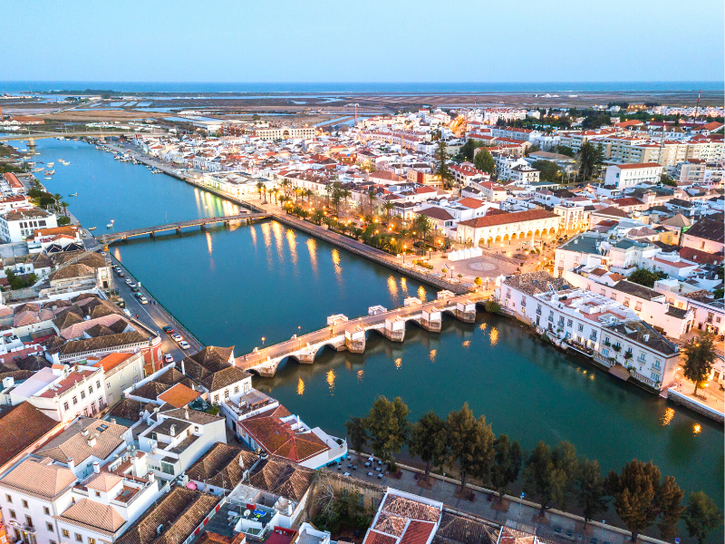

|
|
Best Place To Visit In Portugal
Lisbon
 |
Lisbon is the capital nad the largest city of Portugal. Lisbon is one of Europe's most alluring cities. Set on the banks of the River Tagus, this vibrant Atlantic port is scattered over a series of hills that heighten its splendid waterfront location. In between, you can amble across handsome tree-lined squares stroll along broad, riverfront esplanades or take in jaw-dropping panoramas from the various miradouros, or viewpoints, dotted across the city. It is mainland Europe's westernmost capital city and the only one along the Atlantic coast. Lisbon lies in the western Iberian Peninsula on the Atlantic Ocean and the River Tagus. Lisbon is recognised as an alpha-level global city because of its importance in finance, commerce, fashion, media, entertainment, arts, international trade, education and tourism. The city is the ninth-most-visited city in Southern Europe, after Istanbul, Rome, Barcelona, Milan, Athens, Venice, Madrid and Florence with 3,539,400 tourists in 2018. |
Sintra
Sintra is a town and municipality in the Greater Lisbon region of Portugal, located on the Portuguese Riviera. Enchanting Sintra is one of the gems in Portugal's glittering sightseeing crown. Recognised by UNESCO for its remarkable cultural landscape, this historic and captivating town is definitely worth putting aside a full day to absorb. It's one of the most popular day trips from Lisbon.Peering down over this picture postcard setting is the ancient Castelo dos Mouros, seemingly hewn out of the granite escarpment it runs along. Sintra is one of the most urbanized and densely populated municipalities of Portugal. A major tourist destination famed for its picturesqueness, the municipality has several historic palaces, castles, scenic beaches, parks and gardens. It is home to one of the largest foreign expat communities along the Portuguese Riviera and consistently ranks as one of the best places to live in Portugal. |
 |
Porto
 |
Porto is the second-largest city in Portugal, the capital of the Porto District, and one of the Iberian Peninsula's major urban areas. With its robust granite architecture and commercial disposition, Oporto, Portugal's second city, rewards visitors with a very different experience to that of the capital.Sited at the mouth of the River Douro and blessed with a waterfront – the Ribeira – acknowledged by UNESCO as a World Heritage Site, Porto is a destination endowed with Baroque churches and Neoclassical buildings that number some of the best examples of their kind in the country. It is recognized as a global city with a Gamma + rating from the Globalization and World Cities Research Network. The historic area is also a National Monument of Portugal. The western part of its urban area extends to the coastline of the Atlantic Ocean. Porto is on the Portuguese Way path of the Camino de Santiago. In 2014 and 2017, Porto was elected The Best European Destination by the Best European Destinations Agency. |
Óbidos
Óbidos is a town and a municipality in the Oeste region, historical province of Estremadura, and the Leiria district. Óbidos is an artist's dream. An assortment of whitewashed cottages, cafés, and handicraft stores lining a series of narrow, cobbled streets are completely enclosed by sturdy medieval walls.You can walk along the top of the battlements for lovely views over the terra-cotta rooftops and the lush plains beyond. The fortifications form part of the landmark castle, whose keep looms guardian-like over the charming scene below. The castle itself is now a pousada, an upscale period hotel. The castle and walls of Óbidos were remodelled during the reign of King Dinis I. The limestone and marble structure was strengthened and elaborated, while the keep was created in the 14th century, by King Fernando. The municipality is also home to the famous Praia D'el Rey golf complex, one of the top golf resorts in Europe, and Royal Óbidos - Spa & Golf Resort |
 |
Tavira
|  | Tavira is a Portuguese town and municipality, capital of the Costa do Acantilado, situated in the east of the Algarve on the south coast of Portugal. Cited by many a guidebook as the most captivating town in the Algarve, Tavira does indeed tick all the scenic boxes. The Rio Gilão cuts a smile through this pleasantly laid-back town, with a Roman footbridge connecting one side with the other.The waterfront makes for a wonderful walk, before or after you've uncovered the rest of Tavira's historic treasures. The castle walls provide glorious views across the old town and the nearby coast. The Gilão River meets the Atlantic Ocean in Tavira. The church of Santa Maria do Castelo, built on the site of a Moorish mosque, holds the tombs of Dom Paio Peres Correia and his knights.A Roman bridge links the two parts of the town across the River Gilão. Tavira has a hot-summer Mediterranean climate with hot, dry summers and mild, wet winters. |
Coimbra
Coimbra is a city and a municipality in Portugal. The historic hilltop university in Coimbra is just one reason to visit this venerated Portuguese city. But the wealth of additional visitor attractions, much of them clustered around the Velha Universidade, classified by UNESCO as a World Heritage Site, merits a full day's sightseeing. Among the many archaeological structures dating back to the Roman era, when Coimbra was the settlement of Aeminium, are its well-preserved aqueduct and cryptoporticus. Apart from attracting many European and international students, the university is visited by many tourists for its monuments and history. it is the largest city of the district of Coimbra and the Centro Region. The city, located on a hill by the Mondego River, was called Aeminium in Roman times. |
 |
Serra da Estrela Natural Park
 |
The Serra da Estrela Natural Park (PNSE) is located in the Interior Center of Portugal, essentially in the district of Guarda (85%) and also in the district of Castelo Branco (15%). For good reason, the highest peaks on mainland Portugal, the Serra da Estrela, are called the "star mountains." Rising to 1,993 meters above sea level at its highest point, the range, or more precisely the plateau, is a dramatic natural feature of central Portugal. It is often snowcapped in winter, when opportunistic skiers take advantage of what is probably the shortest ski season in Europe. Among the various activities it has to offer, the marked pedestrian paths and an interpretation center stand out . In economic activities, the importance of Serra da Estrela cheese and the only ski resort in the country is relevant. |
Lagos
One of the premier resort towns in Portugal, Lagos basks in the warmth of the Algarve sun and is the preferred vacation destination for thousands of visitors, who flock to the country's south coast every year.Back on terra firma, Lagos' cultural draws include the remarkable Museu Municipal and its adjoining Igreja de Santo António, the interior of which is one of the most lavishly decorated in the entire region. Lagos is one of the most visited cities in the Algarve and Portugal, due to its variety of tourist-friendly beaches, rock formations (Ponta da Piedade), bars, restaurants and hotels, renowned for its vibrant summer nightlife and parties.Lagos is also a historic centre of the Portuguese Age of Discovery, frequent home of Henry the Navigator, historical shipyard and, at one time, centre of the European slave trade. |
 |